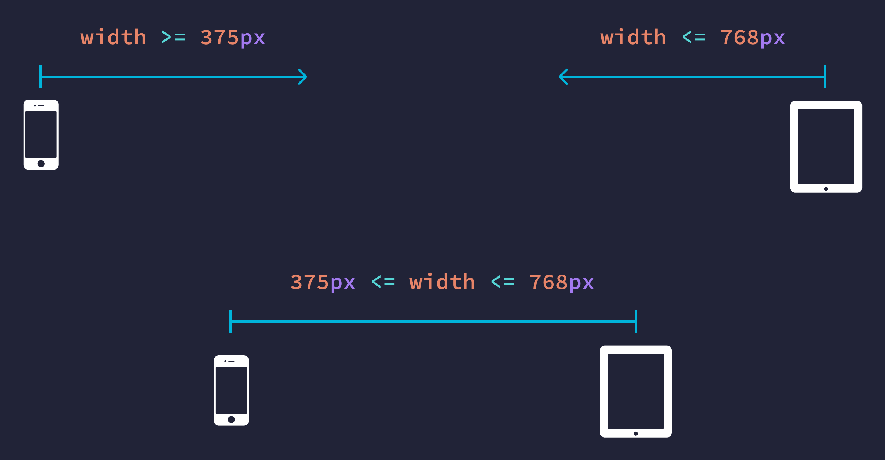

¿Que debo saber sobre este tema?
Una Media Query es una regla o conjunto de reglas que se introducen en una hoja de estilo CSS con el objetivo de definir propiedades específicas para distintos tipos de medios. Son fundamentales en el diseño web actual, ya que son la base del diseño responsive. Esto significa que con una misma maquetación HTML, nuestro diseño se adaptará a diferentes dispositivos y tipos de pantalla.
